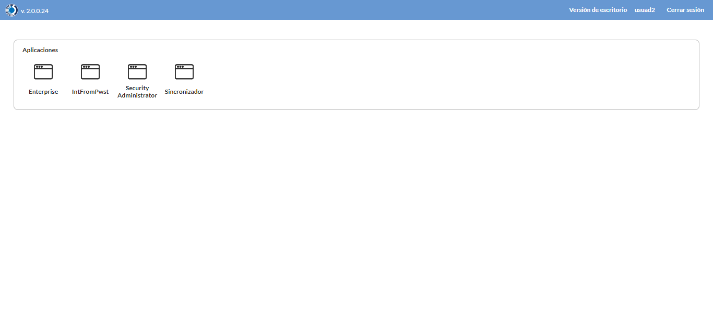
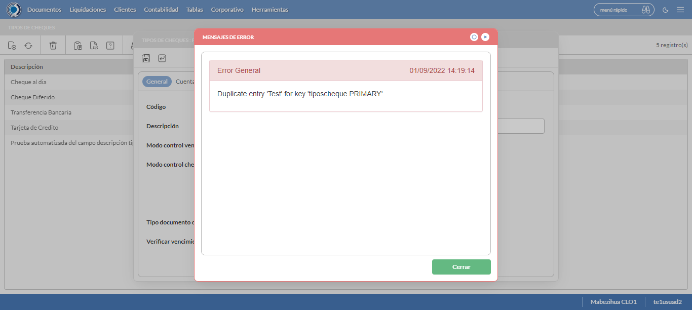

Desarrollado por : Area de Testing PWST
Fecha y hora de inicio : 2022-09-01 09:18:05
Duracion : 0:02:36.996531
Resultado : Total 8，Correctos 6 ，Errores 2 ，Taza de resultado 75.00%
Resumen 75.00% Errores 2 Fallidos 0 Correctos 6 Test realizados 8
| Caso de Prueba | Total | Correctos | Fallido | Error | Detalles | Captura del error |
| TiposCheque.Test: Escenario 1 de Tipos de Cheque | 8 | 6 | 0 | 2 | Detalles | |
test |
pt1_1: 2022-09-01 09:18:07,408 - root - INFO - Se abre el chrome
2022-09-01 09:18:08,727 - root - INFO - Entra a la URL
2022-09-01 09:18:08,861 - root - INFO - Maximiza la pantalla
2022-09-01 09:18:11,914 - root - INFO - Cambia al frame
|
|
||||
test_000: Ingresa a la base de datos |
pt1_2: 2022-09-01 09:18:14,997 - root - INFO - Escribe el usuario
2022-09-01 09:18:15,104 - root - INFO - Escribe la contraseña
2022-09-01 09:18:15,249 - root - INFO - Se dio clic en el boton ingresar
2022-09-01 09:18:16,025 - root - INFO - Ejecutar Enterprise
2022-09-01 09:18:16,026 - root - INFO - Captura: C:\xampp\htdocs\versiones\automatizaciones\AutoPWST\01TPCH\report\img screen：20220901_09_18_16.png
2022-09-01 09:18:20,265 - root - INFO - Cambia entre pestañas
|
 | ||||
test_001: Abre menu y ejecuta pantalla |
pt1_3: 2022-09-01 09:18:25,358 - root - INFO - Abre el menu completo
2022-09-01 09:18:38,295 - root - INFO - Abre la pantalla de Tipos de Cheques
2022-09-01 09:18:38,383 - root - INFO - La pantalla ejecutada es Tipos de Cheques
2022-09-01 09:18:41,393 - root - INFO - Captura: C:\xampp\htdocs\versiones\automatizaciones\AutoPWST\01TPCH\report\img screen：20220901_09_18_41.png
2022-09-01 09:18:41,613 - root - INFO - Se presiona el boton 'Nuevo', para crear un nuevo registro.
|

|
||||
test_002: Abre la ventana de nuevo y crear un registro |
pt1_4: 2022-09-01 09:18:46,717 - root - INFO - Se abrio la pantalla para el ingreso de un registro nuevo.
2022-09-01 09:18:46,761 - root - INFO - El campo 'Codigo' si se encuentra visible.
2022-09-01 09:18:46,803 - root - INFO - El campo 'Descrición' si se encuentra visible.
2022-09-01 09:18:46,843 - root - INFO - El campo 'Modo control vencimiento' si se encuentra visible.
2022-09-01 09:18:46,885 - root - INFO - El campo 'Modo control cheques adeudados' si se encuentra visible.
2022-09-01 09:18:46,924 - root - INFO - El campo 'Único medio de pago en el documento' si se encuentra visible.
2022-09-01 09:18:46,965 - root - INFO - El campo 'Genera documento' si se encuentra visible.
2022-09-01 09:18:47,004 - root - INFO - El campo 'Tipo documento cheque' si se encuentra visible.
2022-09-01 09:18:47,042 - root - INFO - El campo 'Verificar vencimiento por límite de crédito' si se encuentra visible.
2022-09-01 09:18:47,081 - root - INFO - El campo 'Liberar crédito' si se encuentra visible.
2022-09-01 09:18:47,141 - root - INFO - Ingresa el codigo del nuevo registro
2022-09-01 09:18:50,419 - root - INFO - Ingresa la descripción del nuevo registro
2022-09-01 09:18:53,568 - root - INFO - Se da clic en el boton Guardar; se debe crear un nuevo registro.
|
|
||||
test_003: Repetir el registro creado anteriormente |
pt1_5: 2022-09-01 09:18:58,695 - root - INFO - Se presiona el boton 'Refrescar', para crear un nuevo registro igual al anterior.
2022-09-01 09:19:03,825 - root - INFO - Se presiona el boton 'Nuevo', para crear un nuevo registro igual al anterior.
2022-09-01 09:19:08,924 - root - INFO - Se abrio la pantalla para el ingreso de un registro nuevo.
2022-09-01 09:19:08,975 - root - INFO - El campo 'Codigo' si se encuentra visible.
2022-09-01 09:19:09,010 - root - INFO - El campo 'Descrición' si se encuentra visible.
2022-09-01 09:19:09,046 - root - INFO - El campo 'Modo control vencimiento' si se encuentra visible.
2022-09-01 09:19:09,081 - root - INFO - El campo 'Modo control cheques adeudados' si se encuentra visible.
2022-09-01 09:19:09,115 - root - INFO - El campo 'Único medio de pago en el documento' si se encuentra visible.
2022-09-01 09:19:09,150 - root - INFO - El campo 'Genera documento' si se encuentra visible.
2022-09-01 09:19:09,185 - root - INFO - El campo 'Tipo documento cheque' si se encuentra visible.
2022-09-01 09:19:09,220 - root - INFO - El campo 'Verificar vencimiento por límite de crédito' si se encuentra visible.
2022-09-01 09:19:09,255 - root - INFO - El campo 'Liberar crédito' si se encuentra visible.
2022-09-01 09:19:09,309 - root - INFO - Ingresa el codigo del nuevo registro
2022-09-01 09:19:12,568 - root - INFO - Ingresa la descripción del nuevo registro
2022-09-01 09:19:15,693 - root - INFO - Se da clic en el boton Guardar; se debe crear un nuevo registro.
2022-09-01 09:19:20,710 - root - INFO - Captura: C:\xampp\htdocs\versiones\automatizaciones\AutoPWST\01TPCH\report\img screen：20220901_09_19_20.png
2022-09-01 09:19:20,917 - root - INFO - Se presiona el boton 'Cerrar', para cerrar el mensaje de duplicidad de llave primaria
2022-09-01 09:19:24,047 - root - INFO - Se presiona el boton 'Cerrar', para cerrar la ventana
|
 | ||||
test_004: Modificar el registro |
pt1_6: 2022-09-01 09:19:28,151 - root - INFO - Se presiona el boton 'Refrescar', para crear un nuevo registro igual al anterior.
2022-09-01 09:19:37,803 - root - INFO - Se da clic en el registro creado, para proceder a modificarlo.
2022-09-01 09:19:41,088 - root - INFO - Ingresa la descripción del nuevo registro
2022-09-01 09:19:44,228 - root - INFO - Se da clic en el boton Guardar; se debe modificar la informacion del registro.
|
|
||||
test_005: Eliminar el registro creado |
ft1_7: 2022-09-01 09:19:49,354 - root - INFO - Se presiona el boton 'Refrescar', para proceder a eliminar el registro.
2022-09-01 09:19:58,961 - root - INFO - Se da clic en el registro creado, para proceder a eliminarlo.
2022-09-01 09:20:07,093 - root - INFO - Se presiona el boton 'Eliminar', para eliminar el registro.
2022-09-01 09:20:07,095 - root - INFO - Captura: C:\xampp\htdocs\versiones\automatizaciones\AutoPWST\01TPCH\report\img screen：20220901_09_20_07.png
2022-09-01 09:20:07,309 - root - INFO - Se confirma el eliminado del registro
2022-09-01 09:20:12,430 - root - INFO - Se presiona el boton 'Refrescar', para crear un nuevo registro igual al anterior.
2022-09-01 09:20:17,541 - root - INFO - Se presiona el boton 'Cerrar', para cerrar la pantalla de Categorias Fiscales.
2022-09-01 09:20:39,071 - root - ERROR - No se pudo cerrar sesion
2022-09-01 09:20:42,086 - root - INFO - Captura: C:\xampp\htdocs\versiones\automatizaciones\AutoPWST\01TPCH\report\img screen：20220901_09_20_42.png
Traceback (most recent call last):
File "C:\xampp\htdocs\versiones\automatizaciones\AutoPWST\01TPCH\testCase\eliminarregistro.py", line 160, in eliminarregistro
Cerrarsesion = self.wait.until(conditions.visibility((By.XPATH, Configuracion.btn_cerrarsesion)))
File "C:\Users\PWST\Desktop\Automatización\AutoPWST-2.0\AutoPWST-2.0\venv\lib\site-packages\selenium\webdriver\support\wait.py", line 90, in until
raise TimeoutException(message, screen, stacktrace)
selenium.common.exceptions.TimeoutException: Message:
Stacktrace:
Backtrace:
Ordinal0 [0x0107DF13+2219795]
Ordinal0 [0x01012841+1779777]
Ordinal0 [0x00F2423D+803389]
Ordinal0 [0x00F53025+995365]
Ordinal0 [0x00F531EB+995819]
Ordinal0 [0x00F80F52+1183570]
Ordinal0 [0x00F6E844+1108036]
Ordinal0 [0x00F7F192+1175954]
Ordinal0 [0x00F6E616+1107478]
Ordinal0 [0x00F47F89+950153]
Ordinal0 [0x00F48F56+954198]
GetHandleVerifier [0x01372CB2+3040210]
GetHandleVerifier [0x01362BB4+2974420]
GetHandleVerifier [0x01116A0A+565546]
GetHandleVerifier [0x01115680+560544]
Ordinal0 [0x01019A5C+1808988]
Ordinal0 [0x0101E3A8+1827752]
Ordinal0 [0x0101E495+1827989]
Ordinal0 [0x010280A4+1867940]
BaseThreadInitThunk [0x756EFA29+25]
RtlGetAppContainerNamedObjectPath [0x770C7A9E+286]
RtlGetAppContainerNamedObjectPath [0x770C7A6E+238]
During handling of the above exception, another exception occurred:
Traceback (most recent call last):
File "C:\xampp\htdocs\versiones\automatizaciones\AutoPWST\01TPCH\testCase\TiposCheque.py", line 59, in test_005
return eliminarregistro.eliminarregistro(self)
File "C:\xampp\htdocs\versiones\automatizaciones\AutoPWST\01TPCH\testCase\eliminarregistro.py", line 173, in eliminarregistro
self.driver.switch_to.window(self.driver.window_handles[0])
File "C:\Users\PWST\Desktop\Automatización\AutoPWST-2.0\AutoPWST-2.0\venv\lib\site-packages\selenium\webdriver\remote\webdriver.py", line 591, in window_handles
return self.execute(Command.W3C_GET_WINDOW_HANDLES)['value']
File "C:\Users\PWST\Desktop\Automatización\AutoPWST-2.0\AutoPWST-2.0\venv\lib\site-packages\selenium\webdriver\remote\webdriver.py", line 435, in execute
self.error_handler.check_response(response)
File "C:\Users\PWST\Desktop\Automatización\AutoPWST-2.0\AutoPWST-2.0\venv\lib\site-packages\selenium\webdriver\remote\errorhandler.py", line 247, in check_response
raise exception_class(message, screen, stacktrace)
selenium.common.exceptions.InvalidSessionIdException: Message: invalid session id
Stacktrace:
Backtrace:
Ordinal0 [0x0107DF13+2219795]
Ordinal0 [0x01012841+1779777]
Ordinal0 [0x00F24100+803072]
Ordinal0 [0x00F47C6D+949357]
Ordinal0 [0x00F48F56+954198]
GetHandleVerifier [0x01372CB2+3040210]
GetHandleVerifier [0x01362BB4+2974420]
GetHandleVerifier [0x01116A0A+565546]
GetHandleVerifier [0x01115680+560544]
Ordinal0 [0x01019A5C+1808988]
Ordinal0 [0x0101E3A8+1827752]
Ordinal0 [0x0101E495+1827989]
Ordinal0 [0x010280A4+1867940]
BaseThreadInitThunk [0x756EFA29+25]
RtlGetAppContainerNamedObjectPath [0x770C7A9E+286]
RtlGetAppContainerNamedObjectPath [0x770C7A6E+238]
|

|
||||
test_006: Cerrar_Navegador |
ft1_8: Traceback (most recent call last):
File "C:\xampp\htdocs\versiones\automatizaciones\AutoPWST\01TPCH\testCase\TiposCheque.py", line 63, in test_006
self.driver.close()
File "C:\Users\PWST\Desktop\Automatización\AutoPWST-2.0\AutoPWST-2.0\venv\lib\site-packages\selenium\webdriver\remote\webdriver.py", line 552, in close
self.execute(Command.CLOSE)
File "C:\Users\PWST\Desktop\Automatización\AutoPWST-2.0\AutoPWST-2.0\venv\lib\site-packages\selenium\webdriver\remote\webdriver.py", line 435, in execute
self.error_handler.check_response(response)
File "C:\Users\PWST\Desktop\Automatización\AutoPWST-2.0\AutoPWST-2.0\venv\lib\site-packages\selenium\webdriver\remote\errorhandler.py", line 247, in check_response
raise exception_class(message, screen, stacktrace)
selenium.common.exceptions.InvalidSessionIdException: Message: invalid session id
Stacktrace:
Backtrace:
Ordinal0 [0x0107DF13+2219795]
Ordinal0 [0x01012841+1779777]
Ordinal0 [0x00F24100+803072]
Ordinal0 [0x00F47A20+948768]
Ordinal0 [0x00F6E6F0+1107696]
Ordinal0 [0x00F6C536+1099062]
Ordinal0 [0x00F6C0A8+1097896]
Ordinal0 [0x00F051F7+676343]
Ordinal0 [0x00F05863+677987]
Ordinal0 [0x00F05C9A+679066]
GetHandleVerifier [0x01372CB2+3040210]
GetHandleVerifier [0x01362BB4+2974420]
GetHandleVerifier [0x01116A0A+565546]
GetHandleVerifier [0x01115680+560544]
Ordinal0 [0x01019A5C+1808988]
Ordinal0 [0x00F05071+675953]
Ordinal0 [0x00F04A21+674337]
GetHandleVerifier [0x0139886C+3194764]
BaseThreadInitThunk [0x756EFA29+25]
RtlGetAppContainerNamedObjectPath [0x770C7A9E+286]
RtlGetAppContainerNamedObjectPath [0x770C7A6E+238]
|
|
||||
| Caso de prueba | 8 | 6 | 0 | 2 | Taza de resultado：75.00% | |